Cada botón de paso se ilumina con el color de su familia. Toca un paso del dibujo o una tarjeta.
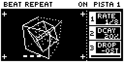
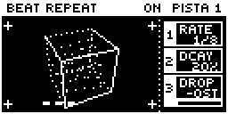
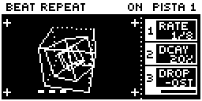
Repite la rodaja de audio justo anterior, alineada a la rejilla del loop. El clásico beat repeat para redobles y repeticiones.
- K1 tasa: 1/4, 1/8, 1/16, 1/32, 1/8T, 1/16T
- K2 decay: cuánto baja cada repetición
- K3 drop: baja el tono en cada repetición (0 a 12 semitonos)
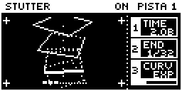
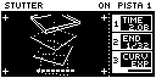
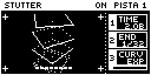
Repeticiones que se aceleran de 1/4 hasta la tasa final, como un redoble que se cierra.
- K1 tiempo: de 1 a 4 pulsos
- K2 tasa final: 1/16, 1/32, 1/64
- K3 curva de aceleración: de lineal a exponencial
Cambia el tono sin cambiar el tiempo (granular de 40 ms).
- K1 -12 a +12 semitonos
- K2 afinación fina ±50 cents
- K3 mezcla seco / mojado
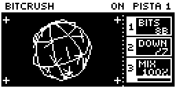
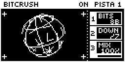
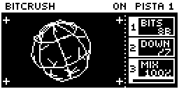
Reduce bits y frecuencia de muestreo: sonido sucio, digital, de videoconsola.
- K1 bits: de 16 a 2
- K2 submuestreo: de 1 a 32
- K3 mezcla seco / mojado
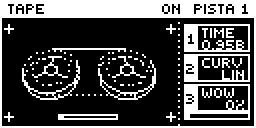
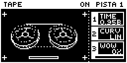
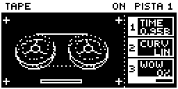
Parada y arranque de cinta. Al encenderlo la cinta frena hasta el silencio (baja velocidad y tono); al apagarlo vuelve a arrancar en el mismo tiempo. En momentáneo: pulsar = stop, soltar = start.
- K1 tiempo: de 1/4 a 2 pulsos
- K2 curva: de lineal a pronunciada
- K3 wow: fluctuación de velocidad
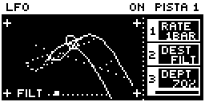
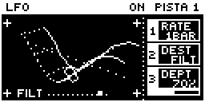
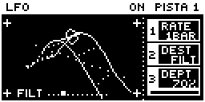
Modulación cíclica sincronizada al loop: un barrido que se repite. Entra con rampa de 30 ms y al apagarlo todo vuelve exacto.
- K1 tasa: 14 divisiones sincronizadas (1/32 a 8 compases) y 11 tasas libres (0,05 a 32 Hz) en un solo knob por pasos
- K2 destino: FILT (filtro paso bajo), VOL, PAN, PTCH (±7 semitonos)
- K3 profundidad

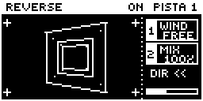
Lee el audio hacia atrás desde el momento en que lo pulsas (hasta unos 2,9 s y vuelve a empezar).
- K1 ventana: 1/4, 1/2, 1 compás o libre
- K2 mezcla seco / mojado
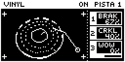
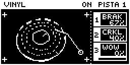
Disco que frena: el tono cae despacio (sin llegar a parar) con crujido de vinilo.
- K1 freno
- K2 crujido
- K3 wow: oscilación lenta del tono
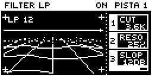
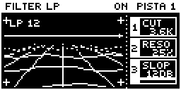
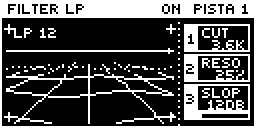
Filtro paso bajo resonante: quita agudos. El corte sigue al knob con suavizado.
- K1 corte: de 30 Hz a 18 kHz
- K2 resonancia
- K3 pendiente: 12 o 24 dB
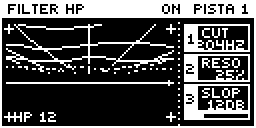
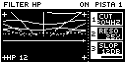
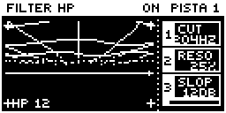
Filtro paso alto resonante: quita graves. Ideal para preparar una entrada.
- K1 corte: de 30 Hz a 18 kHz
- K2 resonancia
- K3 pendiente: 12 o 24 dB
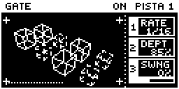
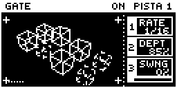
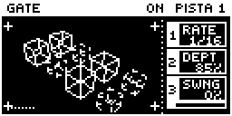
Puerta rítmica sincronizada al loop: abre la primera mitad de cada celda y corta la otra.
- K1 tasa: 1/4, 1/8, 1/16, 1/32, 1/8T, 1/16T
- K2 profundidad
- K3 swing: retrasa las celdas impares
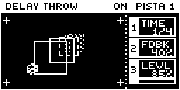
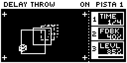
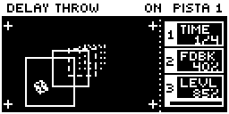
El audio entra al delay solo mientras el efecto está activo; al soltarlo, los ecos siguen sonando y se apagan solos.
- K1 tiempo: 1/8, 1/8., 1/4, 1/4., 1/2
- K2 feedback: 0 a 88 %, ecos cada vez más oscuros
- K3 nivel del eco
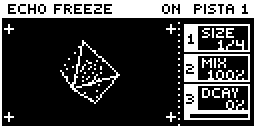
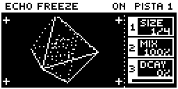
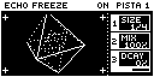
Congela una rodaja en un bucle infinito con fundido, que sigue sonando aunque no entre nada.
- K1 tamaño: 1/16, 1/8, 1/4, 1/2, 1 pulso
- K2 mezcla con el seco
- K3 decay del bucle (0 % = infinito)
Retrigger de DJ: cada unidad de rejilla repite su primer cuarto saltando al inicio, siempre a tiempo.
- K1 cada 1/4, 1/2 o 1 compás
- K2 baja el volumen en cada retrigger
- K3 baja el tono en cada retrigger (0 a 4 semitonos)
15HALF SPEED
cinta / tiempoLee a ½ o ¼ de velocidad (cae el tono) y vuelve a tiempo en cada ciclo.
- K1 velocidad: ½ o ¼
- K2 mezcla seco / mojado
Silencio inmediato (fundido de 3 ms), o corta solo los graves o solo los agudos.
- K1 parte: ALL, LOW o HIGH (24 dB/oct)
- K2 fundido: de 2 ms a 500 ms
- K3 frecuencia de corte de LOW/HIGH: 60 Hz a 12 kHz
Bombeo tipo sidechain: el volumen se hunde en cada celda de la rejilla y vuelve a subir. Está en la página 2 de efectos (botón >), en el paso 1.
- K1 tasa: 1/4, 1/8, 1/16, 1/32, 1/8T, 1/16T
- K2 profundidad del hundimiento
- K3 curva: cuánto tarda en volver
Saturación: aprieta y calienta el sonido.
- K1 ganancia
- K2 tono: de oscuro a brillante
- K3 mezcla seco / mojado
Modulación en anillo: multiplica la señal por una portadora y da timbres metálicos.
- K1 frecuencia: 20 Hz a 4 kHz
- K2 modo: FREE (portadora libre) o NOTE (clavada al semitono)
- K3 mezcla seco / mojado
Flanger: un barrido de peine con feedback.
- K1 tasa
- K2 profundidad
- K3 feedback
Phaser de 4 etapas: notches que se desplazan por el espectro.
- K1 tasa
- K2 profundidad
- K3 feedback
Chorus: copias desafinadas y mecidas que ensanchan el sonido.
- K1 tasa
- K2 profundidad
- K3 mezcla seco / mojado
Panorama automático: el sonido va de izquierda a derecha al ritmo del tempo.
- K1 tasa sincronizada: 1/16 a 4 compases
- K2 profundidad
- K3 forma: SIN, TRI o SQR
Trémolo: el volumen oscila al ritmo del tempo.
- K1 tasa sincronizada: 1/16 a 4 compases
- K2 profundidad
- K3 forma: SIN, TRI o SQR
Filtro de peine resonante: da un tono metálico afinado a cualquier sonido.
- K1 tono: 55 Hz a 1,7 kHz
- K2 feedback
- K3 mezcla seco / mojado
Automatización de knobs
Con un efecto encendido, mantén el pad REC (fila 1) de una pista que suena y gira K1-K3: lo que gires se graba (256 pasos, con interpolación) a lo largo del loop de esa pista. Un ciclo va de IN a OUT a cualquier velocidad; con reverse sigue al audio. Al soltar suena en bucle; un toque corto de REC sigue siendo el REC normal. Delete + knob, o ARM + knob, borra la curva de ese knob. Se guarda con el Set.
SHIFT + paso = momentáneo
Sin entrar en el modo PERFORM: mantén SHIFT y mantén un paso. El efecto suena mientras lo mantienes y al soltar todo vuelve exactamente como estaba, a tiempo.
Nunca toca tus loops
Los efectos solo actúan sobre la salida: nunca escriben en el audio grabado. Al apagarlos, el sonido es idéntico al de antes (salvo la cola de DELAY THROW, que se apaga sola). Entran y salen con fundidos cortos, sin clics.
Sensibilidad por knob
Cada K1-K3 es continuo o por pasos. Un knob por pasos acumula clics: avanza una posición cada 10 clics (hasta 4 posiciones), cada 6 (hasta 8) o cada 3 (listas largas), y el aviso muestra la opción (RATE 32HZ). Los continuos responden fino (0,5 % por clic con REC mantenido) y solo aceleran en giros muy rápidos. La automatización de un knob por pasos graba posiciones exactas, sin interpolar.
Los knobs no tocan el clip
En modo PERFORM (o con SHIFT mantenido) los knobs nunca mueven IN, OUT ni la velocidad: con un efecto encendido van al efecto; sin efecto no hacen nada al clip. Loop + knob también se ignora.
Apagar efectos
SHIFT + selector (FX CLR) apaga los efectos PERFORM de esa pista, su FX de pista, reverse y velocidad, y borra su automatización. X + selector (RESET FX) además devuelve volumen, pan y mute a fábrica. El audio no se toca.
Quita agudos. La cantidad (K6) es el corte, de unos 60 Hz a 11 kHz.
Quita graves. La cantidad es el corte, de unos 40 Hz a 10 kHz.
Reduce la resolución: retiene muestras y cuantiza más fuerte cuanto más subes la cantidad.
Eco sincronizado al tempo (1/8). La cantidad sube a la vez el feedback y la mezcla.
Barrido de 4 etapas. La cantidad es la velocidad del barrido, de 0,05 a 2,5 Hz.
Multiplica el audio por una senoide: sonido metálico. La cantidad es la frecuencia, de 30 Hz a 1 kHz.